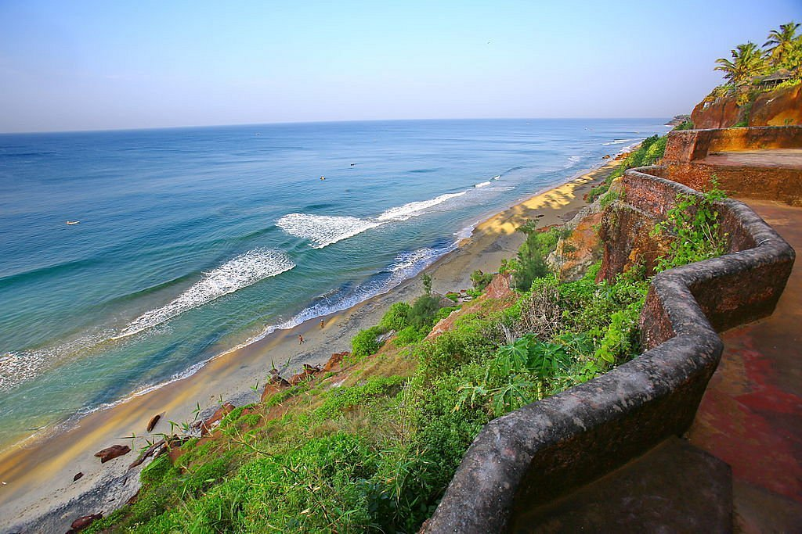
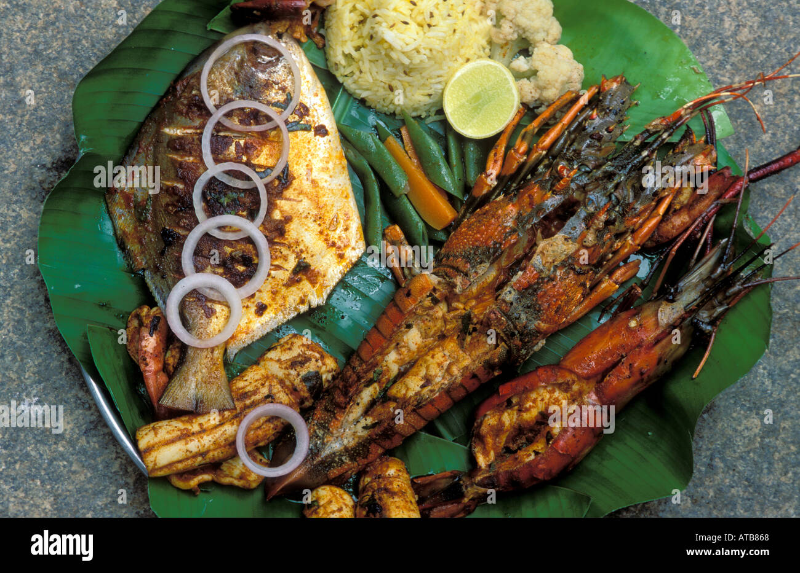

Kerala Beaches: The Tranquil Paradise
Introduction
Kerala, often referred to as "God's Own Country," is not just famous for its lush landscapes and backwaters but also boasts some of India’s most stunning beaches. With golden sands, swaying palm trees, and serene waters, Kerala’s beaches offer a perfect escape for relaxation and adventure. Let’s explore the best beaches that this beautiful state has to offer!
Best Beaches to Explore
Kovalam Beach
Kovalam Beach is the crown jewel of Kerala's coastline. Known for its crescent-shaped shoreline, this beach is a haven for sunbathers and surfers alike. With its vibrant beach shacks, Ayurvedic centers, and stunning lighthouse views, Kovalam offers a perfect blend of leisure and culture.
Varkala Beach
Varkala Beach is famous for its dramatic cliffs that rise majestically above the Arabian Sea. This lesser-known gem is perfect for those seeking tranquility and spiritual retreats. Enjoy breathtaking sunsets, explore the mineral springs, or indulge in yoga sessions along the shore.
Marari Beach
Marari Beach, a tranquil escape from the tourist crowds, is ideal for those looking to experience authentic village life. With its serene atmosphere, soft sands, and picturesque landscapes, Marari invites visitors to unwind and enjoy nature at its finest.
Must-Do activities
Ayurvedic Treatments
Kerala is renowned for its traditional Ayurvedic therapies. Many beach resorts and wellness centers offer rejuvenating treatments right by the shore. Treat yourself to a relaxing massage or holistic therapy while listening to the soothing sound of the waves.
Water Sports
For the adventure enthusiasts, Kerala's beaches offer a variety of water sports activities. From parasailing and jet skiing at Kovalam to surfing at Varkala, there are plenty of options to get your adrenaline pumping.
Beach Walks
Take leisurely strolls along the picturesque coastlines of Varkala and Marari Beach. The serene environment and stunning views create the perfect backdrop for peaceful walks, especially during sunrise or sunset.
Cultural Experiences
Visit Local Fishing Villages
Immerse yourself in the local culture by visiting nearby fishing villages. Engage with the friendly fishermen, learn about their traditional lifestyles, and witness their daily routines as they bring in fresh catches from the sea.
Explore Historic Sites
Combine beach relaxation with cultural exploration by visiting nearby historic sites. Fort Kochi, with its colonial architecture and vibrant art scene, is a short drive from many beaches and offers a glimpse into Kerala's rich history.
Culinary Delights
Seafood Specialties
Kerala's coastal cuisine is a delight for seafood lovers. Enjoy fresh catches cooked to perfection at beachside shacks and restaurants. Don’t miss out on trying dishes like fish curry, prawn fry, and the famous Kerala-style seafood biryani.
Local FlavorsIndulge in traditional Kerala dishes such as appam with stew, puttu, and banana chips while enjoying the stunning beach views. Many local eateries offer authentic flavors that reflect the region's uniqueculinary heritage.
Conclusion
Kerala’s beaches are a perfect blend of natural beauty, cultural richness, and tranquility. Whether you’re looking to relax on golden sands, indulge in Ayurvedic treatments, or explore vibrant local culture, Kerala's coastline offers an unforgettable experience. So, pack your bags and get ready to soak in the sun, sea, and serenity of Kerala's enchanting beaches!
Comments